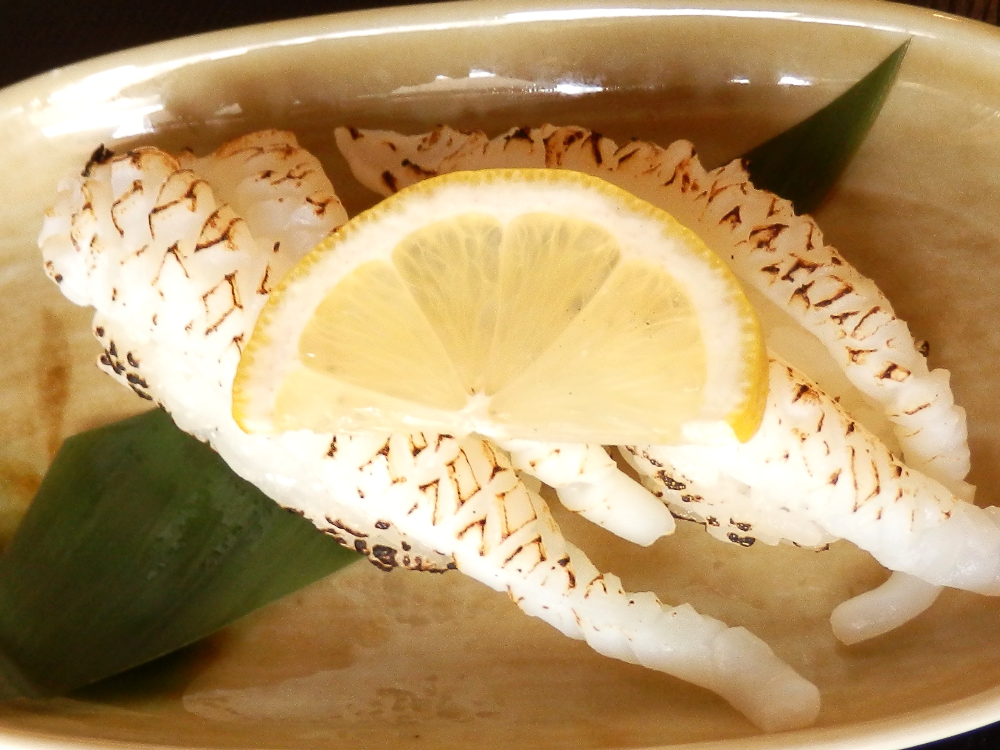

にぎりサービスセット
人気NO.1!定番のにぎり８種類に鉄火巻きをサービス！お得です。
1030
盛り合わせサービスセット
通常の盛り合わせをさらにボリュームアップしました！
満腹間違いなしのセットです！
920

万葉弁当
季節のお造り、揚げ物、焼き物、炊き物、小鉢物、ご飯、吸物など。メニューは週替わりです。コーヒーは＋100円を頂いております。
1000

にぎり天ぷらセット
自慢のお寿司にミニ天ぷら、小鉢物、お吸物をセットにしました。
1100

ちらし天ぷらセット
甘めのシャリが人気のちらし寿司に、ミニ天ぷら、小鉢物、お吸物をセットにしました。
1100

まぐろ
こだわりのマグロです。
300+tax

あぶりげそ
さっぱりとレモンと天然岩塩でどうぞ。
250+tax

あぶりハモ
400+tax

あぶりタイ
ポン酢ジュレともみじおろしでさっぱりとお召し上がりいただけます。
300+tax

カリフォルニアロール
新定番、スモークサーモン、アボカド、クリームチーズ入り！
300+tax

大人のいなり
茎わさびのツンとくる香りと数の子のプチプチ感が相性抜群です。お土産にもしていただけます！価格は二個セットのものです。
300+tax

ネギトロ
390+tax
車海老
いけすで直前まで泳いでいた最高に新鮮な車海老を使います。車海老の頭の塩焼きがつきます。価格は通常価格で変動します。
800+tax

サーモンマヨ
オニオンスライスとマヨネーズをのせてさっぱりと。
300+tax
あぶりサーモン
直火で香ばしくあぶり、天然岩塩と茎わさびで。
300+tax

あぶりホタテ
おすすめは天然岩塩＆レモン。ホタテの甘みが際立ちます。
300+tax

げそのにぎり
250+tax